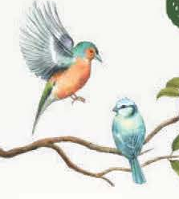
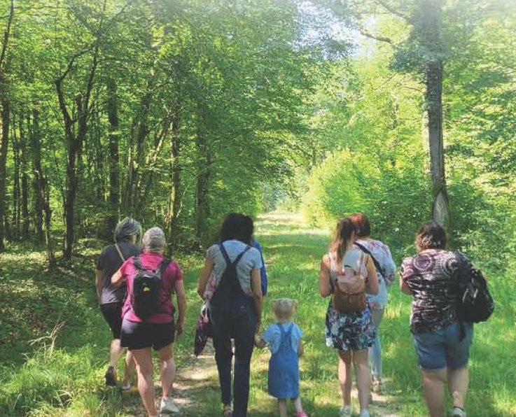

Balade conviviale
Samedi 26 septembre 2026
Salle des fêtes de Collonges-et-Premières

Une journée pleine de surprises
☕ 8h30 à 10h · café d'accueil
Balade sensorielle et ludique
Réveillez vos sens au fil d'un parcours ludique avec des petits jeux, questions et énigmes à résoudre : des paniers gourmands à gagner !
9h : départ de la grande balade (11 km) · 10h : départ de la petite balade (6 km). Café d'accueil + balade ludique + ravitaillement + apéritif. Sur inscription (jusqu'au 26/09) : 5 € adulte · 3 € (- de 16 ans / gratuit - de 6 ans)Animations « nature et 5 sens »
Stands et ateliers ludiques autour de la nature et des 5 sens, pour toute la famille.
Exposition de dessins, initiation à l'apiculture, démonstration de Tataki Zomé (impressions florales sur tissu), stand « plantes comestibles sauvages », maquillages pour enfants, et bien d'autres ateliers… Gratuit et ouvert à tous · de 9h à 13hApéritif et repas convivial
Un repas pour se retrouver, échanger et partager un agréable moment ensemble ! Pour vous remercier de votre présence, l'ADMR a le plaisir de vous offrir l'apéritif.
Apéritif + paëlla royale + fromage + dessert (Genty traiteur). Sur inscription (avant le 20/09) : 18 € adulte · 13 € (- de 16 ans / gratuit - de 6 ans)Concert Two Chords
Thom et Val forment un duo acoustique mélodieux qui revisite avec passion un répertoire mêlant reprises et compositions originales aux couleurs rock et folk des années 60 et 70. Leur univers s'inspire d'artistes emblématiques tels que The Beatles, The Rolling Stones, Pink Floyd ou encore Neil Young.
▶ Plus d'infos : youtube.com/@twochordsband Concert gratuit et ouvert à tous · à partir de 12h15Buvette et jeux extérieurs
Une journée placée sous le signe de la bonne humeur ! Jeux, détente et rafraîchissements vous attendent. Venez vous amuser en plein air et profiter de la buvette dans une ambiance chaleureuse !
Jeux et buvette de 11h à 17hCes deux liens arrivent très bientôt !
 Scannez pour vous inscrire
Scannez pour vous inscrire
Informations pratiques
🥾 Balade 6 ou 11 km
Sur inscription jusqu'au 26/09
Café d'accueil + balade ludique + ravitaillement + apéritif*
5 € adulte · 3 € (- 16 ans / gratuit - 6 ans)
🍽️ Repas convivial
Sur inscription avant le 20/09
Apéritif* + paëlla + fromage + dessert
18 € adulte · 13 € (- 16 ans / gratuit - 6 ans)
*Apéritif offert par l'ADMR aux participants.
Merci à nos partenaires
Un évènement organisé par l'ADMR de Côte-d'Or et l'association ADMR de Genlis/Auxonne, avec le soutien de l'association « Les Joyeux Godillots », les communes de Collonges-et-Premières et Soirans, et le conseil départemental de Côte-d'Or.